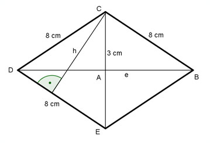

Flächenberechnungen Aufgabe 78 Wie groß ist die Höhe h einer Raute, wenn ihre Seiten 8 cm lang sind und eine Diagonale 3 cm?  Satz von Pythagoras im Dreieck ABC: e 3 8² = (---)² + (---)² 2 2 e² 64 = --- + 2,25 |-2,25 4 e² 61,75 = --- |*4 4 e² = 247 |√ e = 15,7 cm 15,7 cm * 3 cm A = ------------------ = 23,6 cm² 2 Fläche der Raute = 2 * Fläche des Dreiecks DEC 8 * h 23,6 = 2 * ------- 2 23,6 = 8 * h |:8 h = 2,95 cm